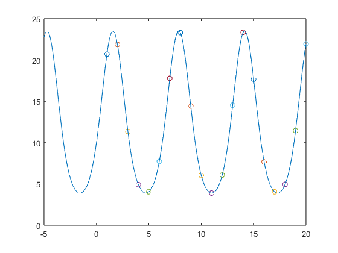

Contents
clc;
clear;
g1
g = @(x,x_data) 10*x(1)./(10*x(2)+(x(1)-10*x(2)).*exp(-sin(x_data)));
x_data = 1:20;
y_data = g([1.1 0.01], x_data);
x0 = [0.7 0.07];
x1 = lsqcurvefit(g, x0, x_data, y_data);
disp(x1);
Local minimum found.
Optimization completed because the size of the gradient is less than
the value of the optimality tolerance.
23.0884 0.2099
g2
g2 = @(a,b,x) 10*a./(10*b+(a-10*b).*exp(-sin(x)));
fittype = fittype(g2);
x2 = fit(x_data', y_data', fittype, 'StartPoint', x0);
disp(x2);
常规模型:
x2(x) = 10*a./(10*b+(a-10*b).*exp(-sin(x)))
系数(置信边界为 95%):
a = 23.09 (23.09, 23.09)
b = 0.2099 (0.2099, 0.2099)
对比
for i = 1:length(x_data)
plot(x_data(i),y_data(i),'o');
hold on;
end
g1 = @(x_data) 10*x1(1)./(10*x1(2)+(x1(1)-10*x1(2)).*exp(-sin(x_data)));
g2 = @(x_data) 10*x2.a./(10*x2.b+(x2.a-10*x2.b).*exp(-sin(x_data)));
fplot(g1);
fplot(g2);
hold off;
